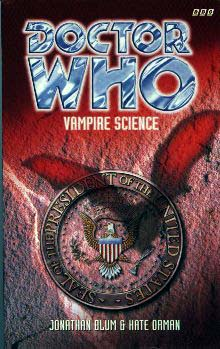

|
Vampire Science
|
BASIC PLOT DOCTOR COMPANIONS The novel was originally written also with Dr. Grace Holloway (from the Telemovie) in mind, but her part was split between Carolyn and Sam after her appearance became impossible due to copyright problems within the BBC. The first chapter of the original version, featuring Grace, can be found in the anthology Perfect Timing. MATERIALISATION CIRCUIT PREPARATORY READING CONTINUITY REFERENCES Pg 1 This novel is divided into 'Bites', in the way that Orman's earlier novels were divided into 'Slices', amongst other things. Pg 8 "He was standing at the street corner, still shouting and shaking his fist at Eva's tail lights. 'Come and have a go if you think yer hard enough!' he called after her." A quote which, in the audio The Shadow of the Scourge, the Doctor attributed to William Shakespeare. Pg 9 "Yes, I'm not human, and yes, that was a vampire, and yes, you really have wandered into an ancient feud between my people and theirs." State of Decay. The matter-of-fact approach of the Doctor here is reminiscent of the Telemovie and was picked up strongly in the Eighth Doctor audios. Reference to the Doctor's two hearts. "Two minutes later she was squeezed in the back seat of a battered maroon VW Beetle." This car is, for the first group of novels, at least, the Eighth Doctor equivalent of Bessie. We later find out that it has the number plate Y2K, so the big joke is that, presuming the newly regenerated eighth Doctor picked it up in San Francisco around the time of the Telemovie, that would make it the Millennium Bug. This is its first appearance. Pg 10 "My people, the Time Lords, have been on the lookout for descendants of the Great Vampires for millions of years, ever since the war we fought against them." State of Decay. Note that there is no 'origin' for these vampires, as there was in Blood Harvest and Goth Opera. They've been around for at least a thousand years, though. See Continuity Cock-Ups. Pg 14 "Running off with a tall, dark, handsome, mysterious stranger and a young femme fatale - two for the price of one. Hey, she wasn't picky: she'd take either." This is the first potential reference to bisexuality in the BBC books. Pgs 15-16 "On the fourth planet out from that star, there's a race of intelligent sea serpents who worship whales as gods. The whales on that planet aren't intelligent, of course, and the serpents know that, but they believe the whales to be so enlightened that they don't need to be intelligent." This may be a reference to the never-made story The Song of the Space Whale. Or it may not. Pg 16 "'Around that one' - he pointed again - 'there's a frozen world where an old enemy once stranded me. I had to build a fire to keep warm till I could be rescued, and I ended up throwing one of my favourite ties on the fire to keep it going.'" The beginning sounds like No Future, while the rest sounds slightly facetious. (It's not The Crystal Bucephalus - that wasn't an old enemy, and the Fifth Doctor didn't wear a tie.) Pg 16 "I tried to complain, but the man behind the counter was just swamped. "I've only got six hands! he said...'" Presumably he's from Alpha Centauri, as seen in The Curse of Peladon, The Monster of Peladon and Legacy. "She looked out of the window. 'This is what the sky looked like when I was a kid.'" There are various bits of symbolism about the return of Doctor Who scattered throughout this book. This is one of the most obvious: looking up into the sky and seeing aliens, as you did in your childhood. Reference to Daleks. Pg 17 "Well, I haven't crashed any flitters on Mars recently." An uncertain reference (something he's done with Sam?). The wide-eyed enthusiasm for life and interest in everything, something that Orman and Blum were seemingly trying very hard to emphasise in this book, matches the Doctor of the Telemovie accurately. Pg 18 "A pharmacist on Lacaille 8760 once gave me a fascinating lecture about lipids." A Lacaillan appears in Return of the Living Dad, and Bernice travels on a Lacaillan ship in Buried Alive, a short story in A Life Worth Living. "He was magic." The Science/Magic thing is in full swing in this story, and is used as a comparison between the Seventh and Eighth Doctors. One can't help thinking, when reading sections such as this one, that Kate Orman's in love. Pg 22 "Finally he produced a stack of opaque white squares, twelve of them, each about four inches by four. 'If you run across any more vampires, just give us a call,' he explained, as he handed them to her." These appear to be a telepathic communication device the like of which we saw in The War Games. A similar device was named a Tesseract in Love and War. Ace uses it in Deceit and we see something similar in Tears of the Oracle. Pg 25 "San Fransisco, 1997" The Telemovie was also located in San Fransisco. The similarity of location was because Dr Grace Holloway was supposed to be the companion, and the location remained when she was dropped. Note that these events occur chronologically two and a bit years before the Telemovie, whereas the original story would have taken place some time after 2000. This was changed to 1997 to explain why the Doctor doesn't look Grace up. Note also that the gap which Sam later mentions when the Doctor travels alone for a time could easily have happened between Chapters One and Two of this book. Pg 26 "Senator Daniel Ben-Zvi is murdered in his own front yard." A Daniel Ben-Zvi was one of the contributors to the short story anthology Perfect Timing 2. Pg 29 "Sometimes a little disturbed, as though she was intruding. This room had belonged to another teenager, long ago." It's possible that Sam's in Ace's room, although Ace certainly wasn't a teenager when she left the TARDIS. Neither, for that matter, were Chris, Roz, Bernice, Mel, Evelyn Smythe, Frobisher, Peri or Erimem. It's possible she's in Turlough's or Nyssa's room (especially as the former inherited the room from Adric), but more likely that it indeed is Ace, and the Doctor hasn't explained much about what happened to her, which is understandable, all things considered. Pg 30 "Maybe, once upon a time, he'd even had a wife and kids." See Cold Fusion and The Infinity Doctors, but the answer's still far from clear. "Sam dried herself and dressed, sitting on the edge of the bath while she tugged on her sneakers. They were her third pair since Coal Hill - she'd done an awful lot of running since she'd started this magic carpet ride." Clearly a fair length of time has passed since The Eight Doctors, although it can't have been too much as Sam is still 17 at this point. And why are they 'sneakers' - in England, they're called 'trainers' or 'plimsoles' at worst. See also Continuity Cock-Ups. On the Doctor's real name: "It was probably Fred." This is what the Doctor threatened to call Romana in The Ribos Operation. Pg 31 "Old enough to dodge Daleks, too young to go to a nightclub." Sam appears to have met the Daleks at some point (although the Doctor may well have just been talking to her about them, or perhaps he's shown her his copy of The Evil of the Daleks via thought-broadcast). Pg 37 "First, Oxwell was found on the roof of a fish shop four blocks from Ben-Zvi's house, dressed in... a diving suit, with a note pinned to his back saying 'bite me'." 'Bite me' was one of the taglines from Buffy the Vampire Slayer, and much of this book shows certain similarities (including one out-and-out name-check). Orman and Blum have stated that they had not seen that show when this book was being written. (Interestingly, the new BBC series' creator has said that Doctor Who must be able to compete in a post-Buffy Television world, and that Buffy certainly has an influence on the style of the new series.) Pg 39 "She's got a deal with the BEMs." BEMs stands for Bug-Eyed Monsters, an absolute no-no when the show was created back in 1963. So much for that idea. Pg 40 There's a flying reference to Shangri-La, but this is presumably the famed fictional land, rather than the Welsh campsite which appeared in Delta and the Bannermen. Pg 44 "The first time I met the Doctor,' said Kramer, 'Washington DC was about the disappear down a time rift.'" Time Rift (see above). "'What is UNIT exactly? The Fortean branch of the military?' 'If you like. It's our job to keep the Earth safe from outside. And make sure nobody finds out about the aliens until we're all ready to handle it.'" They're still doing it, as The Christmas Invasion proves, although, following that adventure, their second mission statement is now rather less important. Actually, considering the advent of Torchwood, it's possible that they have been superceded in their first as well. Pg 45 Reference to the Seventh Doctor: "Even play along with an alien who won't tell you what his clever plan is..." and "Try short and dark-haired, somewhere in his forties, with a Scottish accent. Irish maybe." Pg 47 "Homeless dying on the streets; it was like London." Sam's grating belief in every cause under the sun is brought out into the open early on. We saw its beginnings in The Eight Doctors. Pg 57 "If there's one thing my life doesn't need it's another temporal paradox." How very prescient of the Doctor, who doesn't yet know that his entire existence will soon become a temporal paradox - see Interference. Pg 59 "Throughout it all he was singing, a long spiraling melody which jumped between scraps of Italian, snatches of what sounded like a bebop trumpet solo, and tongue-tripping percussion fills." It turns out that this is "The rebirth aria from Paletti's The Fourth Sister. Don't worry if you don't recognize it: it won't be written for another few decades." The Eighth Doctor's interest in Opera was highlighted in the Telemovie. It's possible that his knowledge of 21st century opera was piqued when he discovered himself as a character in one in Transit. Furthermore, in a famous section of The Room With No Doors, the Doctor discusses how musical tastes change from regeneration to regeneration: 'suddenly you like jazz instead of opera.' In the case of the Eighth Doctor, he seems to have married the two tastes. How very symbolic. "Right on a cymbal crash from the Doctor, two slices of cinnamon toast popped out of the toaster." And now this reads like a prose version of the Morecambe and Wise breakfast sketch done to the music of 'The Stripper'. (Incidentally, it's interesting to note the comparison between a Seventh Doctor, who would be unlikely to cook breakfast for everyone (unless it was part of some cunning plan), and the Eighth who does, with a Ninth Doctor who doesn't like to hang around for domestics, and a Tenth who stays for Christmas dinner in The Christmas Invasion.) Pg 60 "Now she had magic with which to fight the monsters." 'Magic' is a phrase used throughout this novel to define the Eighth Doctor, while 'fighting the monsters' is something that his previous incarnation had a lot of experience with, and was something of a tagline in the NAs. Pg 63 "I met him once myself, back when he was in his previous regeneration. When he was that funny-looking little Scottish guy." Time Rift again. "Well, basically because he's a manipulative little weirdo who was always up to something behind my back." Yep, sounds like the Seventh Doctor. Not that I'd know - can't get a copy of Time Rift anywhere these days. "Good job on handling that Brieri scouting party, by the way." Uncertain reference, and we've not heard of the Brieri before. Pg 65 "For all we know, we could be dealing with ancient horrors from my people's mythology, human psychopaths, or the giant mosquitoes of Atraxi 3." State of Decay, Blood Harvest et al. Something that sounds like it might have been in The X-Files. Uncertain reference. It turns out to be option one. Pg 66 "Sam Sam Sam Sam Sam." In one of the worst decisions made on characterization ever, it was decided that the Eighth Doctor would repeat words, as he did in the Telemovie. (A similar piece of 'characterisation' - the Seventh Doctor's malapropisms - was quietly dropped after Delta and the Bannermen.) It's incredibly annoying, and no one stopped them doing it! For almost twenty books! Pg 67 "C'mon. It's like me skiving off school to go to the gay rights march." Sam is still incredibly 'with-it' regarding the important issues. This, also, would never go away. Pg 68 "Mum and Dad're never gonna get involved in anything bigger than cleaning up the park down the street. Or some kid's social worker problems." Annoying spelling which once again proves how up-to-date Sam is. An amusing irony, however, would have been if Sam's Mother or Father, earlier in their working life, were involved in Ace's issues with social workers (see Survival, Timewyrm: Revelation and Love and War for more). Pg 69 "'It's the bartender,' Sam said, glancing at the other end of the bar. 'She's dressed as Death from the Sandman comics.'" This version of Death actually exists in the Who Universe as well, given that she made a cameo appearance in Happy Endings. "Sam looked around. There were huge blow-ups of Giger paintings around the walls. A giant video screen was showing Nosferatu, black-and-white images flickering behind the dancers." Possible references to Dragonfire, in that the appearance of the 'Dragon' in that story was Giger influenced, and the name of Glitz's spacecraft was the Nosferatu. "Everyone was wearing black, looking deadly serious. Some of the costumes were stunning, lots of period stuff." The club of vampire-wannabes is a feature of the plot of the Buffy episode Lie to Me, first broadcast (in the US) four months after this book was published. Pg 70 "It was the Altairian driver's licence the Doctor had helped her get." This is a Hitchhiker's Guide to the Galaxy reference. We haven't met Altairians. Pg 79 In the ambulance: "The Doctor sat beside her, holding her hand, occasionally casting an odd glance at one of the paramedics." The paramedic in question is presumably Bruce, who becomes the Master in a little over two years, in the Telemovie. Pg 80 "He put his hands to his temples. 'Why? Why why why why why?'" There's the annoying repetition thing again. The Telemovie. And why are there no commas between the repeated words? Pg 82 "I'm just going to be stabbed by a patient or catch AIDS during an operation or die in some filthy Third World hospital, still thinking I can hold back death." Holding back death is a reference to the events of the Telemovie, while Shackle himself (the speaker here) is a vague analogy to how the Doctor himself could become depressed (and thus to the Seventh Doctor). Even his name - Shackle - refers to the NAs in a way, in that one of their themes is that the Doctor was shackled to a treadmill in order to keep time on the track that he'd already set it on. Pg 83 "Not her, Sam Jones, the girl who'd climbed on to a roof to spraypaint ANOREXICS DIE FOR BUSINESS ££££ on to a lingerie billboard." There are more references to Sam's eternal belief in good causes, but I can't bear to list any more, so this will be the last. (Once again, in Orman and Blum's defence, I think they were trying to 'grow her out' of this phase by having her doubt herself and the Doctor in this book, which is presumably one reason why they distanced Vampire Science from The Eight Doctors in Sam's personal timeline. Sadly, the attempt failed.) Pg 85 Reference to Ace and the Doctor's manipulative ways with her, in this case specifically to Time Rift, but it could easily refer to the early NAs in general. Pg 87 "Even that mess with the drug-runners at school had had a sense of unreality about it." The Eight Doctors. And yes, it did indeed have a sense of unreality about it. This is Orman and Blum's version of Dicks' "It had been a weird, fantastic adventure, full of improbable, illogical events" commentary on the Telemovie. Pg 91 Reference to the war against the vampires, as initially referred to in State of Decay. "It was easy for me to kill Lord Zarn's followers, I didn't know myself well enough at the time to know that's not what I do." The Eight Doctors, and he only remembered his first three or four incarnations by that point in that story. It's still something of a hand-wave, because Orman and Blum are desperately redefining a Doctor that Terrance Dicks already defined in a rather different way. Pg 93 "If this patient were any more utterly average, they'd have two point four kids and a Chevrolet." This is Sam's blood under scrutiny, and it turns out that she's utterly average and safe because she's been made that way - see Alien Bodies and Unnatural History. Pg 98 "There are men and supermen, and we are the transcendent ones." A similar argument was made in Silver Nemesis, and it didn't turn out too well for the Nazis in that story either. Pg 101 "'I'm a Time Lord,' said the Doctor. 'From the planet Gallifrey in the constellation of Kasterborous.'" We knew that. Moreover, it turns out that "I'm a former President of the High Council of the Time Lords, Keeper of the Legacy of Rassilon, Defender of the Laws of Time and Protector of Gallifrey." The Invasion of Time, plus The Five Doctors to some time before The Trial of a Time Lord. Pg 101-102 And furthermore: "I'm called the Bringer of Darkness, the Oncoming Storm and the Evergreen Man." Various translations of Ka Faraq Gatri mentioned throughout the NAs. (The Dying Days, Love and War, Timewyrm: Revelation, respectively.) Pg 102 And: "I personally dispatched the King of the Great Vampires." State of Decay. Pg 104 "It just didn't seem very likely that the Time Lords were still around." Given the events of The Ancestor Cell, it turns out that this was quite prophetic. Pg 113 "The Doctor took it from him. 'Sonic screwdriver,' he explained." We saw this in the Telemovie. It's Romana's - she gave it him in Lungbarrow. Pg 114 "Welcome,' he said, striking a dramatic half-lit pose, 'to the Opera... of Doom.'" The Opera of Doom was the title of a story that was the original opener for Season 22. Or at least the fanzine DWB printed that as fact, despite the fact that it was a rumour created and spread entirely by fans. It was to have featured Litefoot, Henry Gordon Jago, Padmasambhava, Omega, the Master, the Rills and the Cybermen. And, incredibly, no one realized it was a hoax. Meantime, back in this story, much of the theatrical imagery in the second half of the book presumably owes its origins to the theatrical nature of the direction of the final confrontation scenes in the Telemovie. (And as an aside, having a character who just happens to be a theatrical lighting designer is a massive plot contrivance.) Pgs 117-118 "When it comes to dealing with the spawn of the Great Vampires, they [the Time Lords] like to err on the side of thoroughness." Actually, not much changes: witness the Time Lord's ultimate weapon in Inteference. Pg 118 "Why didn't you just say you were Osiris?" Pyramids of Mars, maybe. "Oh, oaths to Rassilon, proclamations of Rassilon, if you could only imagine how much I've had it up to here with the This, That and the Other of Rassilon." Indeed, and haven't we all? This may be the only time that the word 'Other' is capitalized in the BBC books, although we all knew what it meant in the days of the NAs. Pg 119 "Because hunting and killing people is what you spend your time doing, and I just don't want to. Because I don't see why I should have to be burdened by my past." These are both references to the Seventh Doctor of the NAs, who had a tendency to go around killing people for the greater good, and the fact that he was doing so to keep time on track due to his own past actions. Pg 122 "He grabbed her by the shoulders and stared right into her eyes. 'What's it all for?'" This is identical to a sequence in The Pirate Planet. One of the Vampires is called Spike, a character who, again, wouldn't be introduced into Buffy until after the publication of this book. Spooky. Pg 125 "Joanna saw Metebelis and Androzani and Yemaya before the link subsided and stabilized." Metebelis III (Planet of the Spiders), where the Third Doctor died (but see Interference); Androzani (The Caves of Androzani), where the Fifth Doctor died and Yemaya (SLEEPY), which was based around a culture which understood life after death. Pg 138 "For a moment, she could almost believe that he really had just walking into the vampires' lair without any plan, ready to deal with whatever came his way." Another very deliberate display of this Doctor being different to his predecessor. That said, the book makes it very clear that, at this point, the Doctor may well be up to his old cunning plans, but is just much better at keeping them concealed from absolutely everyone. Other 8DAs didn't pick up on this fully, and just made him inept. Pg 143 "They were all too busy watching Deborah Duchene vamp it up in a black evening dress." This is a reference to Forever Knight, in which Duchene played the vampire Janette Ducharme. Pg 149 The Doctor to Carolyn, on coming with him in the TARDIS: "The last time I offered, you said no." Just about, when you look back at Chapter One, and she doesn't actually say 'No', but, 'Can I see you tomorrow?'. This is one of the few points in the book where Carolyn really reads like Grace and not a character in her own right. Pg 150 "'Just rest then. Shh.' And he was laying her back down into her bed, gently running his hand through her hair, his fingertips brushing against her temple, her vision becoming blessedly fuzzy as her head sank back on to the pillow." Despite reading like a soft porn novel, this is the Doctor using hypnotic suggestion to calm someone down when agitated, as he did to Benny (in absentia) in The Left-Handed Hummingbird. Pg 157 A brief appearance for the food machine, staple of the early black-and-white stories and a number of NAs. Pg 158 "In a corner, a sprawling model train layout chuffed happily to itself, switching trains on its own in a never-ending dance." Read more about this in 'Model Train Set', a short story by Jonathan Blum in Short Trips. It was first mentioned in Love and War. Pg 160 "One day he dropped me off at a rally, and when I got back he told me he'd just popped off in the TARDIS for a while. A pretty long while, actually - like a year." This was inserted so that the Eighth Doctor could have his adventures with Izzy and co. in the Radio Times comic strips as well as be in the BBC books, and these are the only stories which have been explicitly stated as occurring in this gap. Since then, however, fandom has inserted many more stories into this gap, including Rip Tide, Eye of the Tyger, various short stories (some, like 'Totem', lasting several weeks) and all the Eighth Doctor audios. As a result, the gap of a single year is beginning to feel like it's breaking under the strain. But then, it may have been longer: see Continuity Cock-Ups. Pg 161 The Butterfly room, a staple of the early 8DAs, makes its first appearance, although it was possibly predicted in The Room With No Doors. Pgs 165-166 (without interruptions from Shackle) "There's an old Buddhist story about a doctor. He worked in the middle of a war that went on and on. All the wounded he treated went right back to the front lines to be injured all over again, or killed. And this doctor couldn't see the point in it any more. No matter what he did, a lot of good people died. And he didn't know what to do about it. He tried withdrawing from the world, but that didn't make it any better. He tried to be cynical and heartless, but despite his best efforts at giving up hope he couldn't quite manage it completely. He even tried to take control of the people around him, and manipulate them into changing things, but no matter what he did he could never control things enough to change everything that needed changing. So this doctor started looking for enlightenment. He went on a long journey, and he met many people and did many things. I won't bore you with the details of everything he found on the way. But eventually, after many, many years, there came a moment when he finally understood. And then he went back to the front lines, to tend to the wounded and heal the sick. Of course it didn't make any more sense than it did before, he didn't have any more control over the world than he'd ever had, but that wouldn't stop him from holding back death whenever he could. It's what Doctors do." Buddhist beliefs and practices have been a mainstay of Who since Planet of the Spiders, if not before, and were also relevant frequently in The Room With No Doors. This rather transparent metaphor (note the sudden capitalization on 'Doctor' at the end) suggests quite clearly to the reader that the NA Seventh Doctor is dead, damn you, dead, yes, quite clearly dead, and don't you argue with me. Oh, and 'holding back death' references the Telemovie again. Pg 166 "The Doctor said, 'I'm going out and I may be some time.'" This quotes Captain Oates on Scott's ill-fated mission to the Antarctic, where Oates went for a 'walk' from which he never intended to return in order to conserve the others' food supplies. The Doctor also quotes it in Planet of Evil. It was famously lampooned in the Red Dwarf episode Marooned. Pg 168 "That's what unlife is all about. Avoiding the sun and the stake. As far as we know, we can live forever, barring accidents." As can the Time Lords, as the Doctor stated, word for word, in The War Games. Pg 169 "'It just sort of hit me.' His voice was quiet and empty. 'No, "hit" is the wrong word. It reached me. Dying really isn't a big thing. It's very small - just a moment. Nothing to be afraid of. You can do it any time.'" Grace told the Doctor that dying was 'nothing to be afraid of' at the end of the Telemovie. Pg 176 "Harris looked up from her Angel Labs microscope, the small hairs on the back of her neck standing on end. 'Well, if it isn't Life's Champion,' she muttered." The Doctor was Time's Champion throughout most of the NAs. Now he appears to have a new cognomen, although Harris may well be being facetious. Pg 177 "His fingers had that feverish tingling common to all mortal skin, but there was a coolness to the touch which reminded her of her own." Great pains are taken to ensure that we understand the similarities between Vampires and Time Lords. This is one such moment. Pg 179 Contender for the most consecutive 'no's' in a sentence: "No. No no no no no no no. No." Not great. Pg 180 "'Cause we all know UNIT's just your unpaid military advisers -" A little harsh, given that they're actually (one presumes) being paid. The Doctor was once (of course) UNIT's unpaid scientific advisor. Pg 181 "'You really have been making this all up as you go along,' she said." He is not, repeat not, the Seventh Doctor. Definitely. Are you paying attention? A brief appearance of jelly babies. Pg 191 I'm sure it's not deliberate, but "We need a more permanent solution to our problem" is a quote from the musical Jesus Christ Superstar. Pg 193 "He covered the notebook with his other hand for a moment and suddenly it wasn't there." Transmigration of object, as we saw in The Ambassadors of Death. Pg 198 "'Yes, I think you've got a pretty good idea what it is, haven't you?' He reached down and let the cat wander back and forth under his fingers." There still seems to be a temptation to reprise the cafe scene from Remembrance of the Daleks in many novels, and sometimes this one feels like it's trying too hard. The attraction of cats to the Doctor may owe itself to Colin Baker's Blue Peter appearance, where the infamously vicious cat Jack sat calmly on his knee throughout. It may not, however. Pg 199 "Mina began to purr. 'It's much easier from your point of view, you know,' murmured the Doctor. 'I could succeed in many things, fail in many more, but as long as I've petted the cat I've done everything that really matters.'" This is actually quite patently nonsense, but quite pretty in a saccharine sort of way. It's may be relevant that the Doctor is working hard to save a cat in The Dying Days as well, and the Doctor's affiliation with cats is at its most poignant in Warlock. Pg 203 "Did you put the !Xs before or after the Xs" is a reference to the different alphabet of The Also People. The character !X also appeared in Down (and possibly The Also People). "She pulled out the next book and saw a bat staring at her." We saw these bats in the Telemovie. Pg 205 "He reached for it, but she beat him to it. It was a greetings card, faded with age. She opened it. 'Happy birthday...' She raised an eyebrow at him. 'Grandfather?' Ace had also seen this card, as she recalled in Cat's Cradle: Time's Crucible. It's from Susan, one presumes. Pg 206 "He started frantically counting on his fingers. 'Um, about...' 'Come on, it can't take that long to -' '... one thousand and twelve.'" The Doctor's one thousandth birthday occurred during Set Piece, according to SLEEPY, and he regenerated (according to this book) at the age of 1009. This gives credence to the idea that he traveled alone for some time between Lungbarrow and the Telemovie (otherwise Chris or Bernice would be quite old by now, and they're not). That said, the new series puts his age around 900, but I'm prepared to accept that this is the length of his adult life. Pg 210 "'Pick them?' asked the Doctor. 'They pick me. Sam picked me.'" The Eight Doctors. He's right too; we wouldn't have chosen her. Another reference to Time Rift. "Either that, or he was a better liar than he'd ever been before, and she'd have no hope of telling if he ever was lying." This is quite clever - the idea that this new Doctor is so convincing that absolutely no one can tell if he's planning or not (and may be a reflection of the comparative acting abilities of McCoy and McGann, or possibly the fact that the seventh Doctor's best laid plans usually required massive improvisation at the last minute; see Warhead for the best example). Sadly, this was never picked up again in the 8DAs. Pg 211 [Companions running off by themselves] "If anything, it's got worse there past few years." The NAs. Pg 217 "'Oh God,' said James. 'No, not quite, but some say I'll do in a pinch,' said the Doctor." Something very similar was said in Sky Pirates! Pg 230 "Gregorio was remembering Tenochtitlan. A wide, straight road that aimed like an arrow for the great city." Gregorio, one of the oldest vampires, may well have been around when the Doctor first visited that city in The Left-Handed Hummingbird. Pg 231 "'I thought she was just some intruder. She set off a silent alarm when she broke in. I didn't know she was one of yours,' Harris insisted. 'Think about it. You've built up a life somewhere, then some stranger blunders into your most secret hideaway... Would you just let them walk about?' The Doctor paused before responding. 'No, I didn't,' he admitted. 'It took me a long time to learn. That's the only reason I still think there's any hope for you. I could let you off with a slap on the wrist and a "no more Janis thorns", but I think it's gone a bit beyond that.'" A rather neat reference to An Unearthly Child. Janis thorns appeared in The Face of Evil, and the line 'no more Janis thorns' from Leela's use of one in The Talons of Weng-Chiang. Pg 238 "'Apparently the Time Lords have a long and honourable tradition of genocide when they think the stakes are high enough,' said Kramer. 'Timelooping whole races, going back in time to prevent them from ever being created... Even fighting that last war against the vampires till they were all wiped out.'" Time Lord overreaction referenced here includes Image of the Fendahl, Genesis of the Daleks and State of Decay. You just wait until Interference. Pg 241 "'Sleep, as the Doctor is fond of saying, is for tortoises,' said Kramer." He originally said this in The Talons of Weng-Chiang. He may well have repeated the sentiment in Time Rift, hence Kramer has heard it, but I don't know if he did because you can't get the video anymore. Pg 257 "'Look, don't even bother with it!' Sam exploded. 'I've heard the whole routine enough times, I can do it for you, save you the trouble. I'm a fake, right, a rich kid with too much time on her hands. List of causes a mile long and an inch deep. No way I could really care about things. I couldn't possibly have thought about any of it for myself, I'm too young. I gotta be just following the crowd, right?'" You said it. In fairness to Orman and Blum, they were doing the absolute best with the cipher they were given by Dicks in The Eight Doctors, but it's more than possible that in making her really believe in herself they did more harm than good to the character. Pg 264 "Well, if it isn't Buffy the Vampire Slayer." The only direct reference in the entire novel. Pg 269 "It's just you, and your little BBC girlie, and me and my boys." Strange turn of phrase for an American (why not PBS?) but nonetheless relevant to the fact that she was created by the ultimate creator of BBC girlies ever, a Mr Terrance Dicks, in The Eight Doctors. Pg 274 "The Doctor was white as a sheet, his forehead icy cold. Sam gently felt for his pulse. It was racing, weak. How much blood had he lost?" That's two adjacent books where the Doctor loses a lot of blood (he donates it to his fourth incarnation in The Eight Doctors). Pg 278 "'Funny that you found a way to slip Harris just enough of a dose to kill her as a vampire, while the bloodfasting was strong enough to keep her alive as a human.' 'Funny that you agreed to get bloodfasted,' put in Harris. 'I'd warned you you could get turned, but I never thought it could work the other way.' 'Yes,' said the Doctor casually. 'Worked out well, didn't it?' 'Almost like you'd planned it that way,' said Sam." This was clearly a rather clever idea: the Doctor's planning is now so deeply embedded that it appears to be entirely unplanned (science/magic again). This would have allowed a great deal of depth to develop in his character that, unfortunately (barring one moment in Unnatural History) was never developed any further. It appears that the other 8DA authors just never quite caught on. "'Well, what do you want? What do you want me to be?' the Doctor asked. 'Someone who knows exactly what he's doing and has it all under control, or just some fellow who makes it up as he goes along, and still makes it happen?' He met both their eyes, and they could see an honest question in them. 'Which do you want it to be? Magic tricks or magic?'" Couldn't be any clearer, could it? Which do you want: the NA Seventh Doctor, or the BBC Eighth Doctor? Answers on a postcard, please... Pg 279 "'Green,' said Carolyn. Kramer shook her head. 'No, they're blue.'" The age-old argument about the Doctor's eye colour which came from errors in the Second Doctor novelisations, where it kept changing (the curse of black-and-white television) and which was picked up and run with in the NAs. It's not at its most subtle here. "They stood at the corner of Haight and Ashbury Streets. 'Oh yes,' said the Doctor. 'I remember those days. In fact, I think at least three of me visited. The summer of love, before the autumn of disappointment and terrible hangovers. It was fun while it lasted.'" Certainly Wonderland was one occasion. OLD FRIENDS AND OLD ENEMIES NEW FRIENDS AND NEW ENEMIES Joanna Harris, who, in an unusual twist, starts the book dead and ends up alive. Doctor David Shackle, who reverses that maneuver, but is still up and wandering around by the end. Captain Groenewegen, who may be an ancestor of the Groenewegen seen in Return of the Living Dad and the Groenewegen who set up the millinery in New Sydney which specially made the seventh Doctor's white fedoras (see White Darkness/First Frontier). In the real world, this is because of the annoying namechecking the NAs and early BBC Books were subject to, in this case for Australian fan and occasional Big Finish short story author Sarah Groenewegan. (Abner, on the other hand, is a much more subtle namecheck, doubtless familiar to denizens of rec.arts.drwho from the mid-nineties, but nevertheless far more non-intrusive than usual.) Lieutenant Forrester. A Taxi Driver.
CONTINUITY COCK-UPS PLUGGING THE HOLES [Fan-wank theorizing of how to fix continuity cock-ups] FEATURED ALIEN RACES There are also Vampire squirrels, which is quite wonderful. Pity they didn't feature more actually. Joanna has created unintelligent battery humans, which the Doctor considers to be a new race. (Pg 233) FEATURED LOCATIONS San Fransisco, 1997, a period from a Friday to a Saturday 8 days later. Presumably it's meant to be contemporary with the book release date, which would place it in July of that year. Locations include: Carolyn and James' house on Divisadero Street, The Haight district, A nightclub called The Other Place, The Shatwell Clinic, in the downtown area, The old Orpheum Theatre, at Ellis and Fillmore, Angel Laboratories, Harris' warehouse, The Regency Park Hotel, and a cemetery. IN SUMMARY - Anthony Wilson |
|
 |